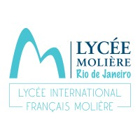
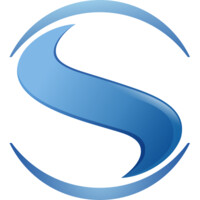
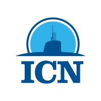

Parcours
Formation & Expériences
🎓 Formation Académique
Diplôme d'Ingénieur · Filière PIL
Fév 2024 – Sept 2026
UTC · Compiègne
Production Intégrée et Logistique, en alternance. Lean management, gestion de production, méthodes statistiques, modélisation systèmes de performance industrielle.
Cycle Ingénieur — Conception Mécanique
Fév 2022 – Fév 2024
UTC · Compiègne
Tronc commun pluridisciplinaire puis spécialisation mécanique. RDM, conception mécanique 1&2, phénomènes électromagnétiques, transmission des efforts.
Baccalauréat Général
Août 2018 – Nov 2021

Lycée Molière · Rio de Janeiro, BrésilSpécialités Mathématiques & Physique-Chimie, option Mathématiques Expertes. École française homologuée, Rio de Janeiro.
Lycée International
Sept 2017 – Juin 2018
Sayfol International School · Kota Kinabalu
Année scolaire en lycée international anglophone à Kota Kinabalu, Malaisie.
💼 Expérience Professionnelle
Apprenti Ingénieur — Production Aéronautique
Sep 2024 – Sep 2026

Safran Aircraft Engines · ChâtelleraultDivision des Moteurs Militaires. Pilotage de la performance industrielle (KPI), amélioration continue, digitalisation des processus de production et déploiement de nouvelles technologies sur lignes de maintenance.
Conception Outillage — Prestation JE
2026
Prestation via la Junior Entreprise de l'UTC pour un équipementier de défense. Conception d'un nouvel outillage et implémentation dans la ligne de production.
Stage Ouvrier — Construction Navale
Juil. – Août 2022

ICN — Itaguaí Construções Navais · BrésilImmersion en production industrielle lourde au sein d'un chantier naval militaire brésilien. Intégration hiérarchique et compréhension des enjeux de construction.